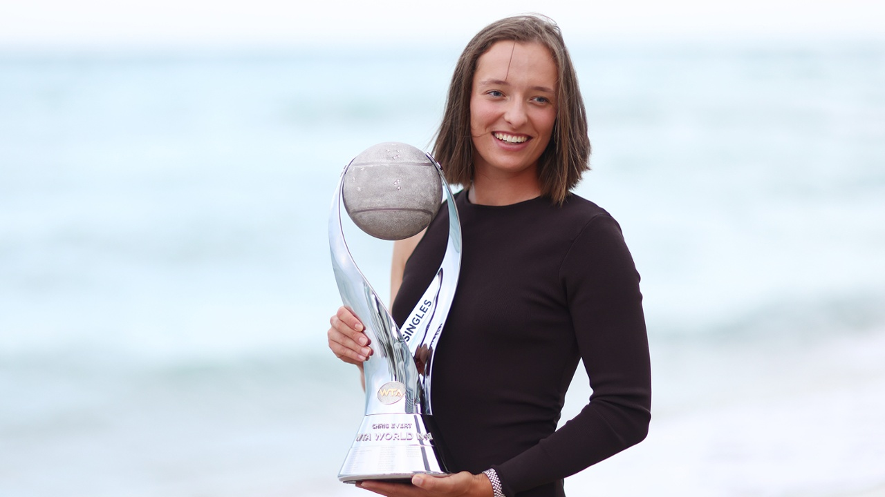
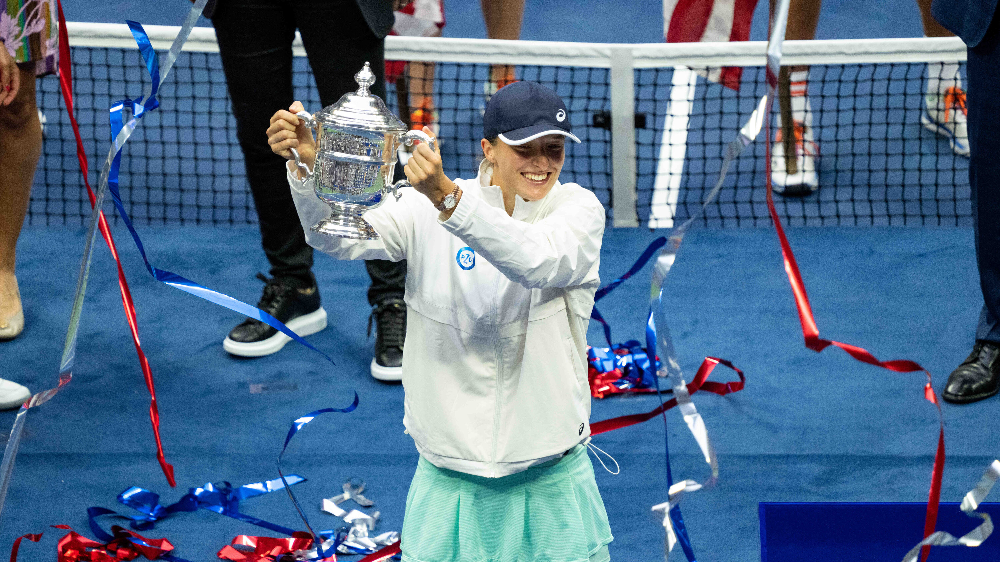
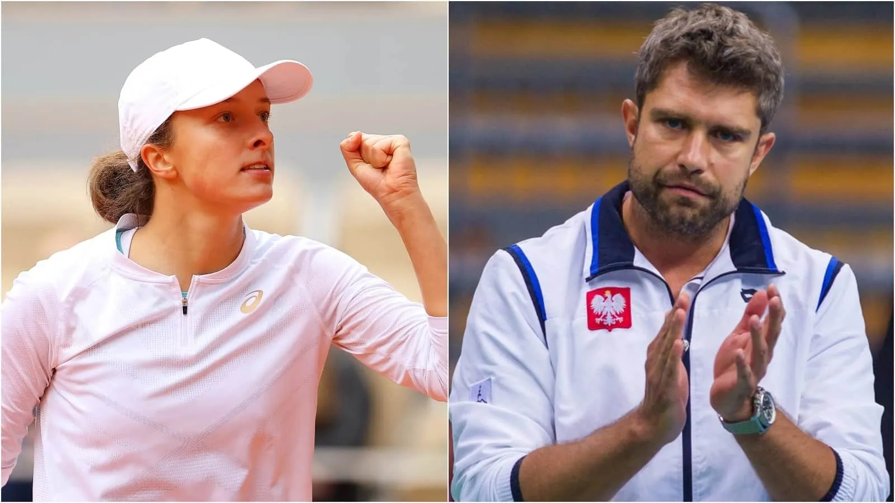

“You did not wake up to be ordinary”. - Iga Świątek
Iga is a professional Polish tennis player that is ranked No. 1 in women's singles tennis.
She has set many great achievements for not only herself, but for the world of tennis and
her country, Poland. At the age of 21, she has won 3 Grand slams, became the first player
representing Poland to win a major singles title, and she won the Polish Sports Personality
of the Year. (wiki) Her main sponsors are PZU, Technifibre, Asics, Rolex, and Xiaomi.
To learn more about Iga, you can find her website here
Awards and Recognitions
Throughout her life, Iga Świątek has excelled in tennis due to her competitive nature and
the support of those around her. As a junior, she reached a career-high rank of #5. As a
junior, Iga won seven ITF Circuits (Undefeated), Canadian Open Junior Championships, Traralgon Junior
International, junior Grand Slam (doubles), junior Gran Slam (singles), and the 2018 Summer
Youth Olympics (doubles with Kaja Juvan). She also reached the quarterfinals and semifinals
multiple times in other competitions but lost, including in the 2016 French Open (singles and
doubles), Australian Open (doubles, 2017), Trofeo Bonfiglio, and again in 2017, the French Open,
where she then had to sit out for seven months with no competitions due to an ankle surgery. (wikipedia)
In 2019, Iga Świątek competed in various competitions, without any major wins, but making her first
appearance in a WTA final and placing her in the top 50 ranked women's singles. However, in 2020,
she won her first Major at the French Open with countless many achievements and upsets. Some of these
achievements include; Iga becoming the first Polish player to win a Grand Slam singles title and lowest-ranked
player to win the French Open in the history of WTA rankings. (wikipedia) In 2021, Iga won her first
WTA 1000 title, reached the French Open doubles final (loss), and became #4 for women's singles.
In 2022, she won multiple more consecutive WTA 1000 championship title, the Sunshine Double, French Open 2022,
and her most recent win and Major title: the 2022 US Open. With this new year and all her victories, she has
became the World No. 1, achieved countless milestones and records in tennis, and became the first
Polish woman to win the US Open!
To learn more about Iga's life and her countless achievements, you can find it Wikipedia by clicking here
Grand Slam Tournament Finals Appearances
Only includes the Australian Open, French Open, US Open and Wimbledon.
| Outcome |
Year |
Tournament |
Mode |
| Win |
2020 |
French Open |
Singles |
| Loss |
2021 |
French Open |
Doubles |
| Win |
2022 |
French Open |
Singles |
| Win |
2020 |
US Open |
Singles |
References

Iga Świątek posing with her WTA trophy.

Iga Świątek with her most recent win, the US Open 2022.

Iga Świątek on the left and her current coach, Tomasz Wiktorowski, on the right.